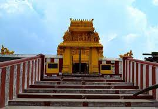
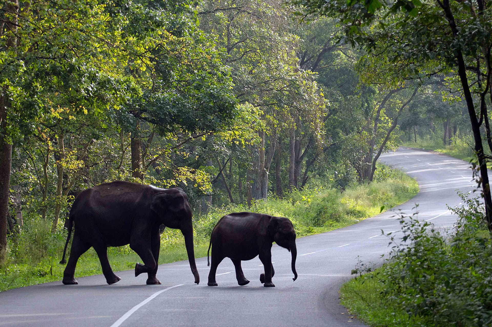
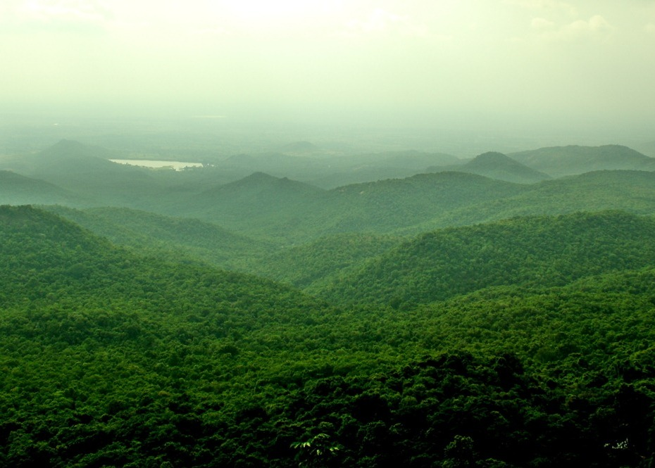
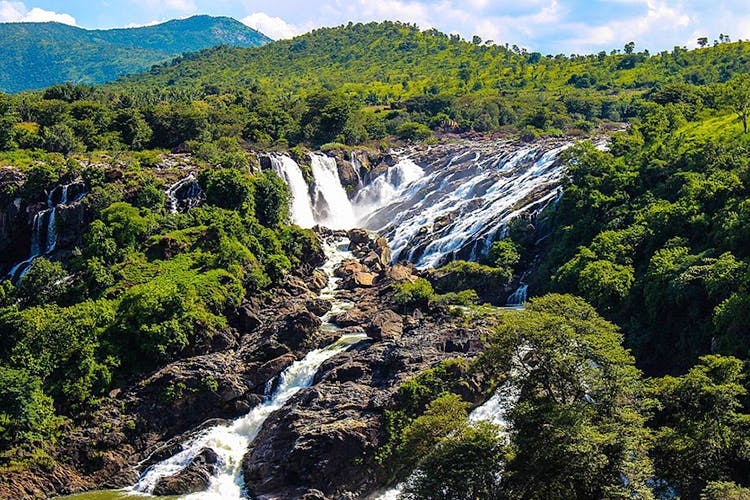
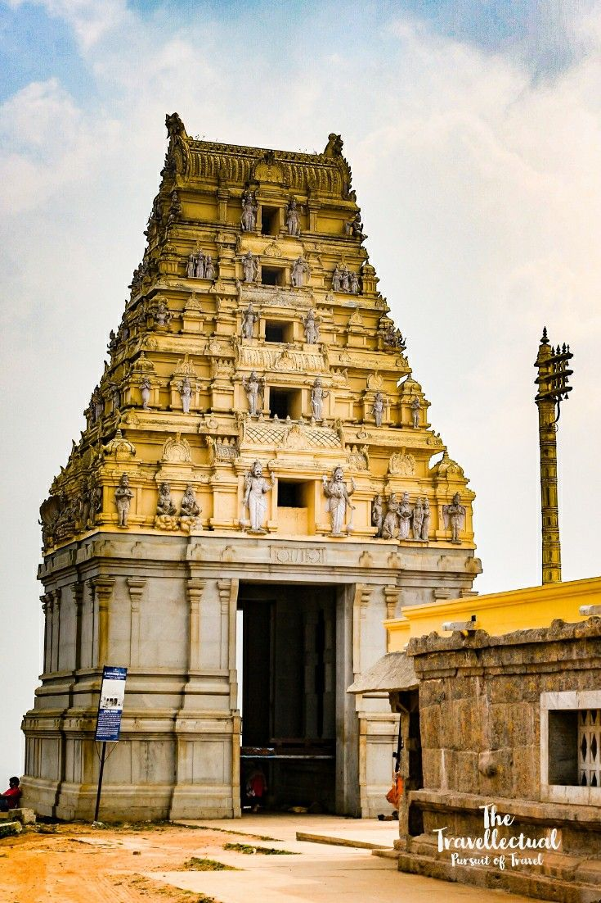
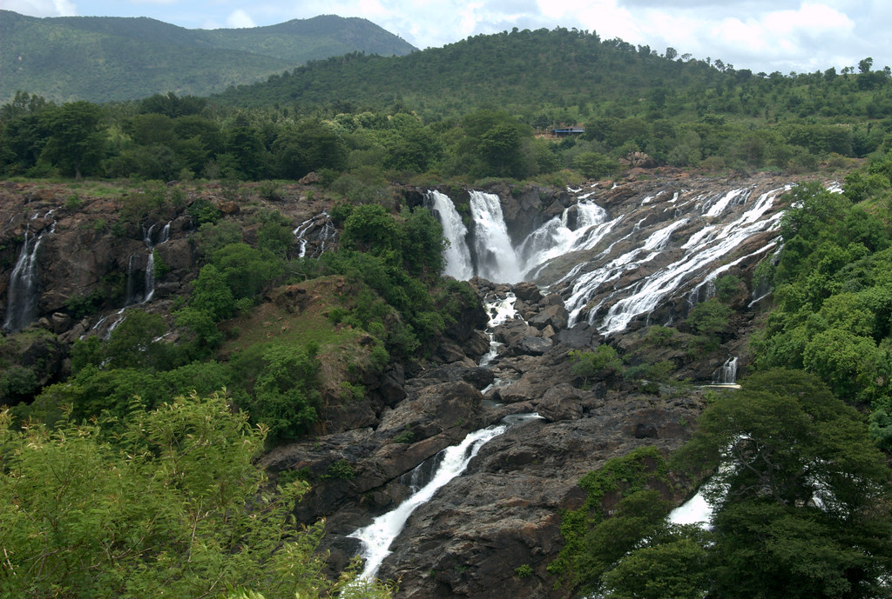

Chamarajanagara is a town in the southern part of Karnataka, India. Named after Chamaraja Wodeyar IX, the erstwhile king of Mysore, previously known as 'Arikottara'. Chamarajanagara town is the headquarters of Chamarajanagar district. It is located on the interstate highway linking the neighboring states of Tamil Nadu and Kerala.
Maaravva or Maaramma is the most widely worshiped deity in the town, more than ten temples of Maaravva can be found in the town. Chamarajeshwara Temple and Haralu Kote Anjaneya Temple are the biggest and the oldest temples respectively. Apart from these, the town has many temples. As far as other religious beliefs are concerned, the town has more than 15 mosques, 5 churches, 2 Jain Basadis, and 2 Buddha Viharas.
Chamarajanagara is the southernmost district in Karnataka.
The main tourist attractionsare Sri Chamarajeshwara temple,
Biligiriranga Hills,K Gudi, Male Mahadeshwara Hills,Gundal dam,
Suvarnavati dam, Hogenakal Falls, Shivasamudram,
Bandipur national park,Gopalaswamy Hills in Gundlupet.

Himavad Gopalaswamy Betta, is a hill located in the Gundlupete Taluk,
Chamarajanagar district of the state of Karnataka,and is extensively wooded.
It is also the highest peak in the Bandipur National Park.
It lies in the core area of the Bandipur National Park and is
frequented by wild life including elephants. Dense fog predominates
and covers the hills round the year and thus gets the prefix Himavad
and the temple of Venugopalaswamy gives the full name of Himavad Gopalaswamy Betta.

Bandipur National Park is a national park covering 868.63 km
in Chamarajnagar district in the Indian state of Karnataka.
It was established as a tiger reserve under Project Tiger in 1973.
It is part of the Nilgiri Biosphere Reserve since 1986. The Maharaja
of the Kingdom of Mysore created a sanctuary of 90 km in 1931 and named
it the Venugopala Wildlife Park. The Bandipur Tiger Reserve was
established under Project Tiger in 1973 by adding nearly 800 km to the
Venugopala Wildlife park.

Male Mahadeshwara Betta is a pilgrim town located in the Hanur
taluk of Chamarajanagar district of southern Karnataka. The ancient
and sacred temple of Sri Male Mahadeshwara is a pilgrim centre where
Mahadeshwara lived, practiced medicine as Sidda, taught ahimsa to people
in and around the seven hills. It draws lakhs of pilgrims from the states
of Karnataka and Tamil Nadu. The area of the present temple surroundings is
155.57 acres. In addition, the temple has lands at Talabetta, Haleyuru
and Indiganatha villages.

Shivanasamudra Falls is a waterfall in Chamarajanagar district
. It is situated along the river Kaveri,
which forms here the boundary to the Chamarajanagar and Mandya district.
Barachukki Falls in Kollegal Taluk Chamarajanagar district and Gaganachukki Falls
in Malavalli Taluk Mandya district and is the location of one of the first
hydro-electric power stations in Asia. It is
on the Kaveri River after the river has found its way through the rocks and
ravines of the Deccan Plateau and drops off to form waterfalls.

BR Hills or Biligiriranganatha Swamy Temple Wildlife Sanctuary is
home to ecosystems that are unique to both the mountain ranges.
Since it is located at the north-west of the Western Ghats and
westernmost edge of the Eastern Ghats, it supports a diverse
flora and fauna in view of the various habitats present.
The Temple is dedicated to Lord Ranganatha and the festivities
in this temple during April attracts a lot of tourists.
The region boasts a variety of vegetation ranging from the dry
and deciduous to evergreens.

The eastern branch of the waterfall is known as Barachukki
while the western branch is known as Gaganachukki.
Barachukki and Gaganachukki waterfalls are together
known as the Shivanasamudra Falls. The two branches
flow through deep ravines on either side of
the island before plunging in two different places
a few kilometres apart to form the Barachukki and
Gaganachukki waterfalls. The waterfalls are located
at a distance of about 139 km from Bangalore and about
60 km from Mysore.
{kind=link}
{kind=link}
{kind=link}
{kind=link}
{kind=link}
{kind=link}
{kind=link}
{kind=link}
{kind=link}
{kind=link}